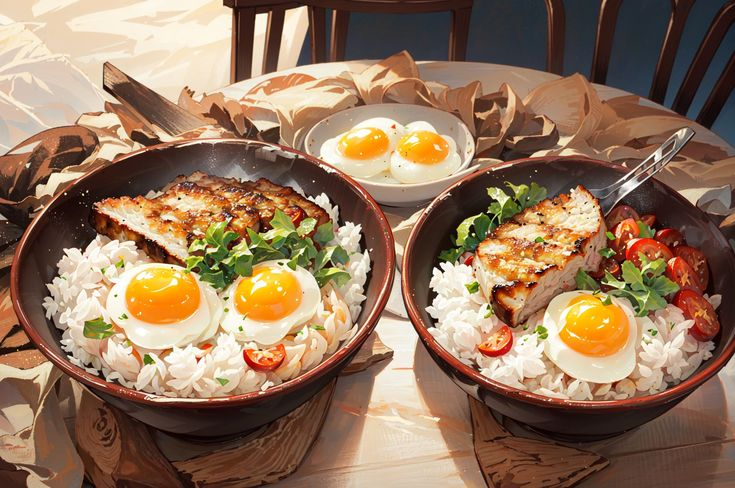

Welcome to L'amant de Shin
Selamat Datang di L'amant de Shin!
Di sini, setiap hidangan adalah sebuah cerita, dan setiap cerita adalah sebuah perjalanan.
Saya dengan bangga menyajikan kelezatan kuliner yang tidak hanya menggugah selera,
tetapi juga menghadirkan kehangatan dan kebahagiaan di setiap sajiannya.
Restoran saya adalah perwujudan dari cinta dan dedikasi terhadap seni kuliner.
Setiap bahan yang saya pilih adalah yang terbaik, setiap resep yang saya buat adalah
hasil dari eksplorasi dan inovasi, dan setiap hidangan yang saya sajikan adalah cerminan
dari komitmen saya untuk memberikan pengalaman makan yang tak terlupakan.
Ketika Anda duduk di meja restoran ini, saya ingin Anda merasakan lebih dari sekadar makanan.
Saya ingin Anda merasakan keramahan para kru, merasakan suasana yang nyaman dan hangat, dan menikmati
setiap momen dengan orang-orang yang Anda cintai. Saya percaya bahwa makanan memiliki kekuatan
untuk menyatukan, untuk menciptakan kenangan indah, dan untuk menghangatkan hati.
Terima kasih telah memilih l'amant de Shin sebagai destinasi kuliner Anda. Selamat
menikmati petualangan rasa yang l'amant de Shin sajikan, dan semoga setiap suapan membawa kebahagiaan
dan kenangan manis.
Selamat menikmati!